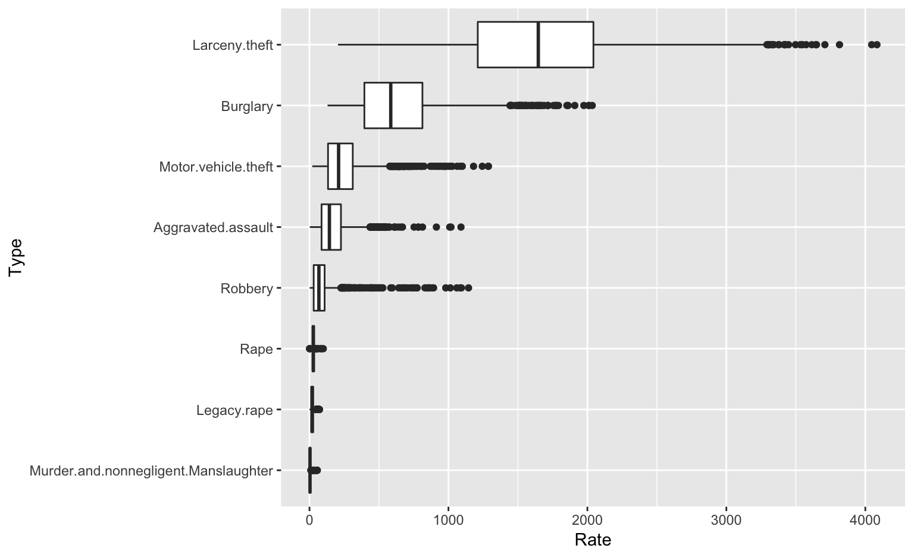

Your turn

For this your turn use the fbi data from the classdata package
- Use
mutateto reorder types of crimes by (median) rate. - Plot crime rates by type in side-by-side boxplots. Medians of the boxplots should be ordered.
fbi <- fbi %>% ungroup %>% mutate(
Type = reorder(Type, Rate, FUN=median, na.rm=TRUE)
)
fbi %>%
ggplot(aes(x = Type, y = Rate)) +
geom_boxplot() + coord_flip()